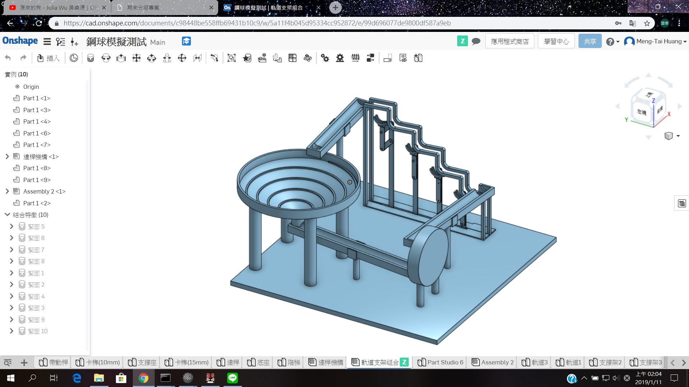
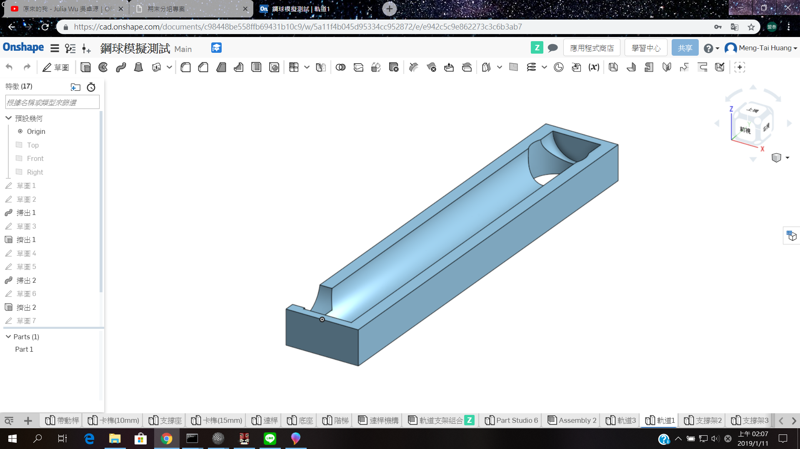
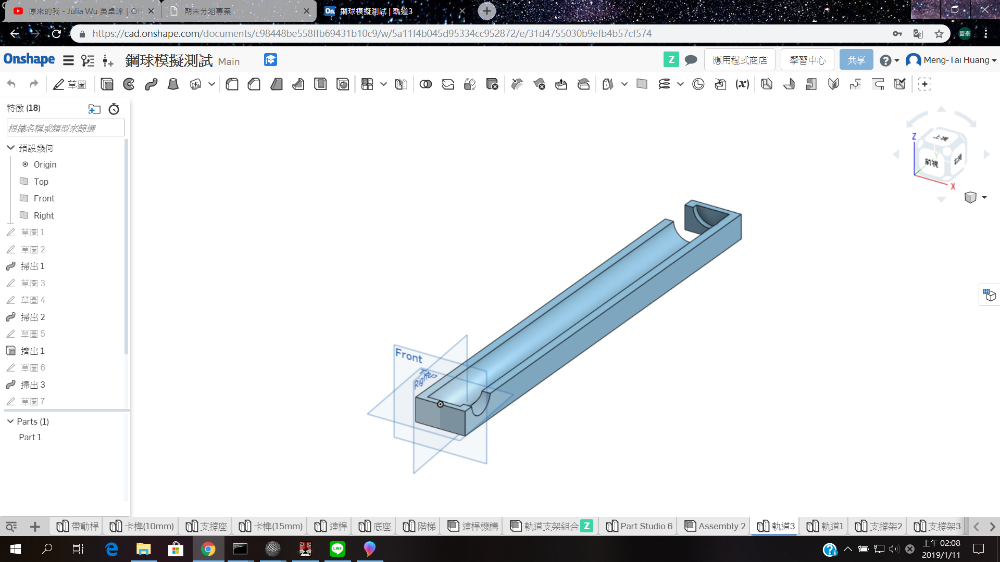
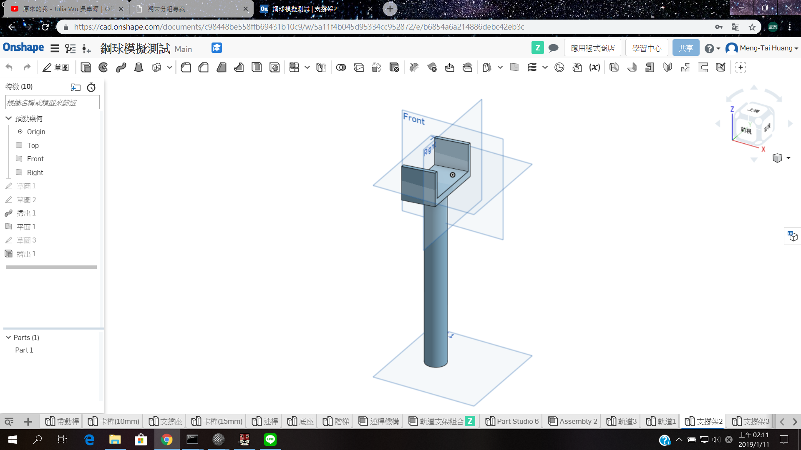
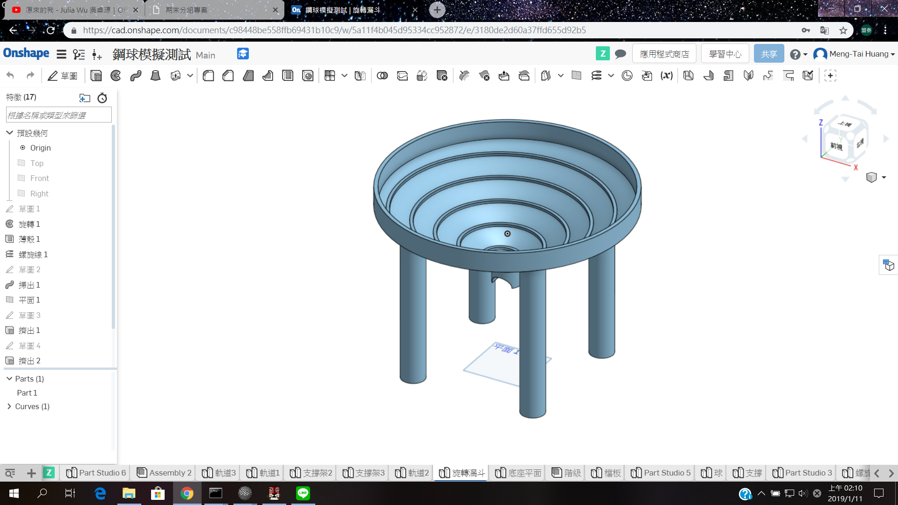
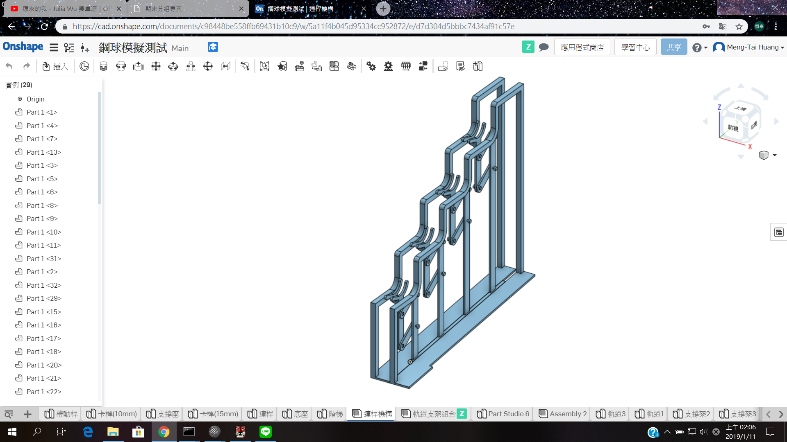
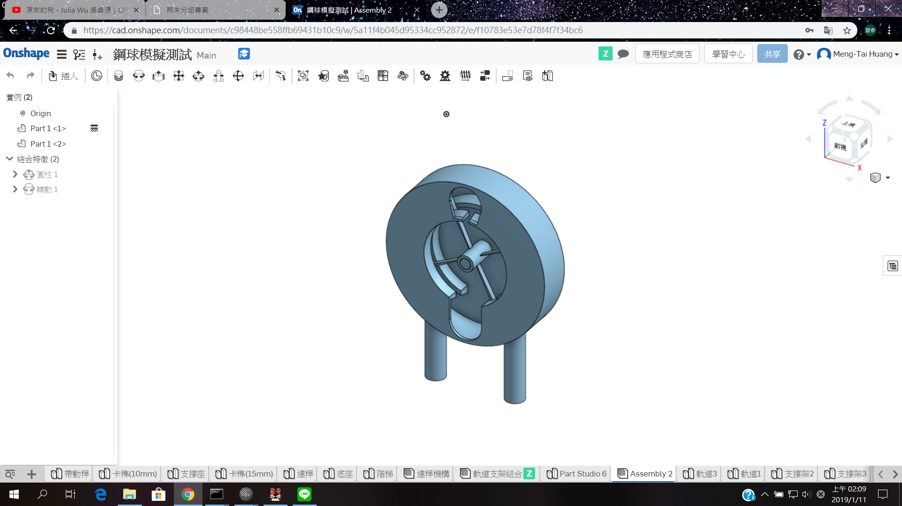

ag7 期末分組網站
Home
Site Map
reveal
blog
Introduction
Course
Onshape
Independent Study
Issue＆Solution
Experience
week11
week12
week13
week14
week15
week16
week17
Final_report
Attend＆Absence
Course <<
Previous
Next
>> Independent Study
Onshape
組合圖

軌道

軌道

支撐架

旋轉漏斗

連桿機構

旋轉機構

Course <<
Previous
Next
>> Independent Study